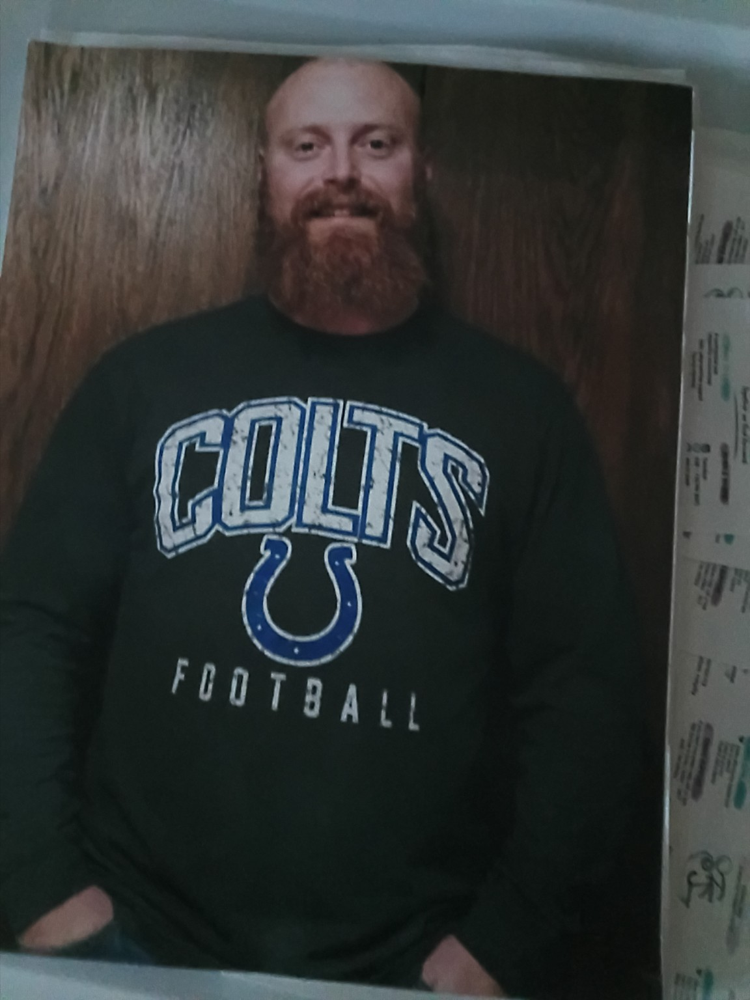

Today, we’re here for suicide prevention and awareness. But before I say anything else, I want to talk directly to one person. Not necessarily the person who came here to support someone else. Not the person who came because this is an important cause. I want to talk to the person who may be sitting here today fighting a battle that absolutely nobody else knows about.
Maybe you’re the person who’s always smiling. The one cracking jokes. The person everybody calls when they need something. You’re checking on everybody else while quietly wondering why nobody ever asks if you’re okay.
If that’s you… please stay. Stay through tonight. Stay through the heartbreak. Stay through the loneliness. Stay through whatever moment is telling you that things will never get better. Because a moment can feel permanent when you’re standing in the middle of it. But it isn’t.
My name is Ryan Farley. I’m a father. I’m a man in recovery. And finally, a trusted man in my community. I’ve spent years working alongside people struggling with addiction, mental health, trauma, and some of the hardest circumstances life can throw at somebody.
Recovery has taught me a lot. But one of the biggest things it has taught me is this: You can look directly at somebody and have absolutely no idea what kind of battle is happening inside of them.
I’ve sat across from people in treatment centers and recovery rooms. I’ve listened to people tell me things they were terrified to tell anybody else. I’ve watched people rebuild lives they thought were completely destroyed—myself included. And I’ve watched people smile while they were physically, mentally, and emotionally broken—myself included. I’ve watched the person encouraging everybody else go home and struggle alone—again, myself included.
That’s why tonight matters. Because suicide prevention isn’t about a statistic on a piece of paper. It’s about people. It’s somebody’s son. Somebody’s daughter. Somebody’s brother or sister. Somebody’s mother. Somebody’s father. Somebody’s best friend. Somebody’s entire world.
And sometimes, a person doesn’t necessarily want their life to end. They just desperately want the pain to end. There’s a difference. That difference is one of the reasons we have to be willing to talk about suicide. We have to stop assuming strong people don’t struggle. We have to stop telling people to “get over it.” We have to stop being afraid to ask someone the difficult question: “Are you thinking about suicide?”
And when somebody finally finds the courage to say, “I’m not okay,” we need to listen. Not judge. Not lecture. Not compare their pain to somebody else’s. Just listen.
Sometimes hope doesn’t arrive as some undeniable miracle. Sometimes hope is a friend sitting beside you at 2:00 in the morning. Sometimes hope is a counselor. Sometimes it’s a recovery meeting or support group. Sometimes it’s a parent, a teacher, a coach, a police officer, an EMT, or a complete stranger. Sometimes hope is somebody looking at you and saying, “You’re coming with me. You’re not doing this alone.” And sometimes hope is simply surviving one more day.
As a father, there are two kids who depend on me being here. There are mornings when they need Dad. There are conversations, hugs, arguments, laughs, football games, and ordinary moments that don’t always seem important while they’re happening. But someday, those ordinary moments will be some of the greatest memories of my life.
Being a father has taught me something: our presence matters more than we realize. I need every person reading this to understand something. Your presence matters too.
Maybe you don’t believe that right now. Maybe life has knocked you down so many times that you’re tired of getting back up. Maybe you’re fighting addiction. Maybe you’re carrying depression. Maybe somebody broke your heart. Maybe you’re grieving someone. Maybe you’re ashamed of something you’ve done. Maybe you’ve lost your job. Maybe your family is falling apart. Maybe you’re carrying something from your past that you’ve never told anyone else. Or maybe you can’t even put into words what’s really wrong anymore. You just know you’re tired.
If that’s you, I’m asking you to do one thing: stay. You don’t have to figure out the rest of your life tonight. You don’t have to fix every problem. You don’t have to suddenly become okay. Just stay long enough to tell somebody the truth.
Say: “I’m struggling.” Say: “I’m scared of what I’m thinking.” Say: “I need somebody to sit with me.” Those might be some of the hardest words you ever say, but they might also be the words that save your life.
I’ve been around recovery long enough to believe deeply in second chances. I’ve watched people walk into treatment believing their lives were over—people who had lost relationships, jobs, homes, freedom, trust, and hope. I’ve watched some of those same people slowly put the pieces back together. Some became sponsors, parents, husbands and wives, employees, mentors, and leaders.
Sometimes the person who once believed they had absolutely nothing left became the person somebody else called when they were ready to give up. Think about that for a minute: sometimes the person who needs saving today becomes the person who helps save somebody tomorrow.
That’s why we can’t give up on people. And that’s why you cannot give up on yourself. Pain is a liar. Pain will tell you that you’re a burden. Pain will tell you nobody understands. Pain will tell you everybody would be better without you. Pain will tell you nothing will ever change. But hear me tonight: pain does not get to write the ending of your story.
There are people you haven’t met yet who are going to be thankful you stayed. There are conversations you haven’t had. Places you haven’t been. People you haven’t helped. Birthdays you haven’t celebrated. Football games you haven’t watched. Hugs you haven’t given. Laughter you haven’t laughed. Second chances you haven’t received yet. Ordinary Sunday mornings you have yet to experience.
There may come a morning when you wake up, look at the life around you, and think, “Thank God I stayed.”
For those of us who aren’t struggling tonight, we have a responsibility too. Check on your people. Check on the strong friend. Check on the person who suddenly got quiet. Check on the recovering addict. Check on the single parent who’s trying to hold everything together. Check on the person going through a divorce. Check on the teenager who says they’re “fine.” Check on the person who jokes about everything. Don’t always accept “I’m fine” as the answer. Sometimes you have to ask twice. Then really ask: “How are you?”
Don’t worry about having the perfect words. You don’t need a degree to care about another human being. You don’t have to fix their entire life. Sometimes you just sit beside them and listen. Sometimes you make the call with them. Sometimes you refuse to leave them alone. Sometimes the most powerful thing you can say is, “I’m here. I’m listening. And you’re not going through tonight alone.”
Tonight, we also remember the people who aren’t here. We remember those who lost their battle. We honor their lives. We honor their families. We honor the empty chairs at dinner tables, the unanswered phone numbers people still can’t bring themselves to delete, the pictures that mean more now than anybody ever imagined they would, the birthdays that will always feel different, and the families who would give absolutely anything for one more conversation, one more hug, one more chance to say, “Please stay.”
We speak their names: Baby J, who many of you knew personally; Devon Wade; Christia Barnett; Brent Knight; and EJ Basham.
Brent died by suicide in 2017. His death was a loss that changed me in ways I still carry today. At that time in my own life, I was struggling more than most people knew. I had reached a place where I was considering ending my own life.

Then I heard the news of Brent. His suicide became the wake-up call that ultimately kept me from following through with mine. Losing him forced me to see firsthand the pain that suicide leaves behind. In the middle of losing him, something changed in me. His death made me realize that I didn’t truly want my life to end—I needed the pain I was living with to end.
I wish that realization hadn’t come through the loss of someone I grew up with. I wish he were still here. But I will always carry the truth that, in one of the darkest moments of my life, losing him saved mine.
We remember them, but then we turn that grief into action. We need to stop waiting until someone’s funeral to tell everybody how much that person mattered. Tell them now. Tell people you love them while they can hear you. Tell people you’re proud of them while they can respond. Check on somebody before you have a reason to wish you had.
You matter before you’re a memory. You don’t have to earn the right to be loved. You don’t have to be perfect to deserve another tomorrow. You don’t have to have your entire life figured out. And you do not have to fight every battle by yourself.
I’ve seen broken lives rebuilt. I’ve seen hopeless people find purpose. I’ve seen people who thought their story was finished turn around and help somebody else write a new chapter.
So maybe there’s a life-changing chapter of your life that hasn’t been written yet. Maybe somebody you haven’t even met is going to need the person you’re becoming. Maybe your greatest purpose is waiting on the other side of the season you’re fighting through right now.
So if tonight is hard, stay. If tomorrow is hard, stay again. Ask for help. Answer the phone. Make the call. Walk through the door. Tell somebody the truth. Give somebody the opportunity to stand beside you.
Because as long as you’re still here, there is still hope. As long as you’re still breathing, something can still change. And as long as there is another tomorrow, your story is still being written.
So please, stay. The world still needs you, and your story is not over.
My name is Ryan Farley, and I want to personally thank you for staying.